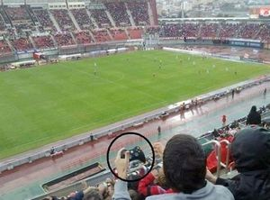
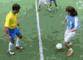
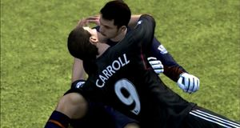
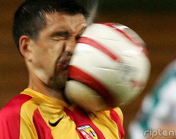

Fifa 13
 De: La Frikipedia, la enciclopedia extremadamente seria.
De: La Frikipedia, la enciclopedia extremadamente seria.
De la serie Videojuegos:
Fifa 13

E A Sports, It´s is the GAME!
| Desarrollado por:
|
EA Zport
|
| Distribuido por:
|
Electronics Jarts
|
| Diseñado por:
|
Esclavos canadienses
|
| Motor
|
Balon de furbo
|
| Género(s)
|
Simulador Robots
|
| Fecha de lanzamiento:
|
De penal
|
| Modos de juego:
|
Amistosa, torneo inventado, onliniea
|
| Requisitos:
|
8GB de Ram, 10 nucleos 4.0Ghz, 320Gb de espacio. (no se necesita placa de video)
|
| Disponible en:
|
Mercado negro y blanco.
|
| Formatos:
|
CDs
|
| Edades:
|
Haber nacido.
|
| Puntuaciones:
|
9,98,04,05566,0,48,464,4,58,001/100 Metacritic
|
Aunque no avance nada siempre vende mas que PES (que retroceden)
FIFA 15 (fífFaÁ QkÍínCéé ÁmmééWwoó) es la 15 version del el juego de furbo creado por EA Sportz. Un juego de simulacion de furbo con Feo Messi de portada. Para leer la historia completa de FIFA hace click en : aca
 Sera tan real que no distingiras la realidad.
Novedades de version 15
Segun el productor de FIFA, Rogelio Funes Mori, el nuevo fifa trae muchas cosas nuevas como estas.
 Ejemplo del Impact Engine del FIFA
- Textured Engine 3.0: El pasto se ve mas verde y se ven las pisadas de los jugadore´.
- Impact engine 3.0: Las colisiones siguen iguales pero le ponemos 3.0 para que parezca que las mejoramos.
- Stadium Engine 2.0: Agregamos mas espacio entre el campo de juego y la tribuna, asi los jugadores se corren una maraton para ir a buscar la pelota cuando sale.
- Mas Requisitos: Ahora el juego pide 8 nucleos de procesador minimo (no es problema para los PC GAMER MASTER RACE).
- Versiones para PS4 y Xbox Juan: eso.
 El Impact Engine a mejorado
Nuevos comentaristas
Fifa a anuncia via skype que los nuevos comentarista son : Fernando Palometa, Super Mario Kempes y un mexicano. Y asi le dieron fin a años de tortura de los comentarios de el Porro Bermudas y su fiel lamevergas. En Aspaña sigue el eterno Cafu Paco Gonzales.
 Mas ejemplo de el Impact Engine 2.0
Opinion de Jugadores de futbol sobre fifa 15
- Messi : Uuajuaga a da pley vo?
- Chicharito : Soy titular :raisins:
- Balotelli : Me gusta el PES
- Pepe : Creo que mi jugador virtual es muy agresivo.
- Tevez : Gud Game may frien
- Ribery : Dios ! mi cara no es tan deforme!!
- Pele : Yo deberia ser la protada, soy el mejor de la historia, messi no mete goles nunca.
- Maradona : Que se yo, si estoy re loco.
Errores comunes de esta version
- El juego no se abre : no le hiciste doble click. Nota: sos pelotudo.
- No se escucha el sonido : prende los parlantes.
- El PES trae la champions : tu mama es hombre.
Vsita tambien :
fifa
Perfil de el Autor : [[1]]
Frikipedia 2005-2016, Licencia
GFDL 1.2 - Extraído por FrikiLeaks